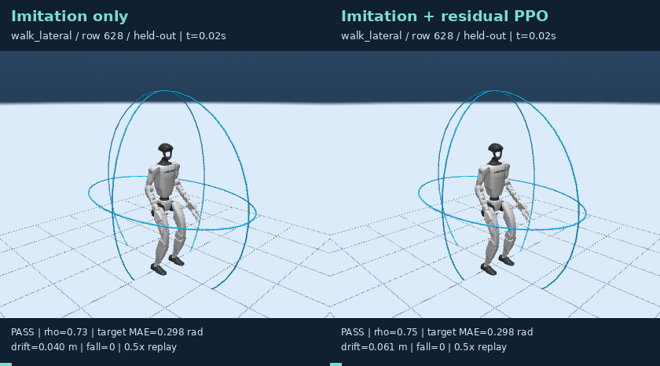
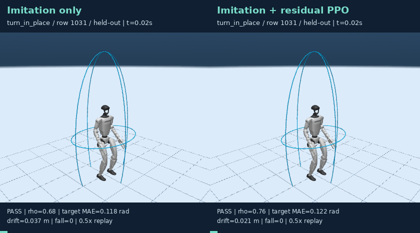
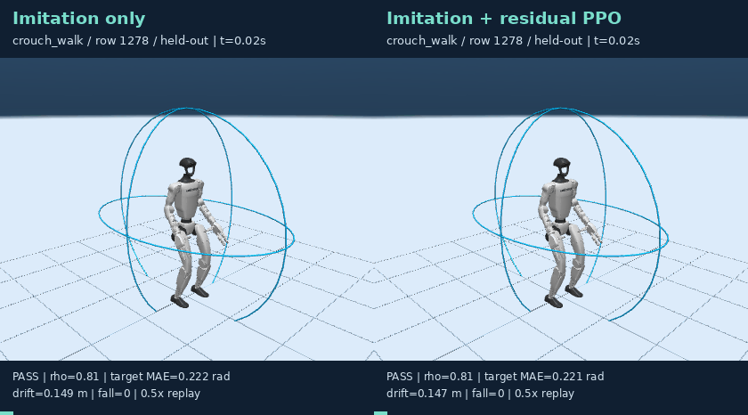
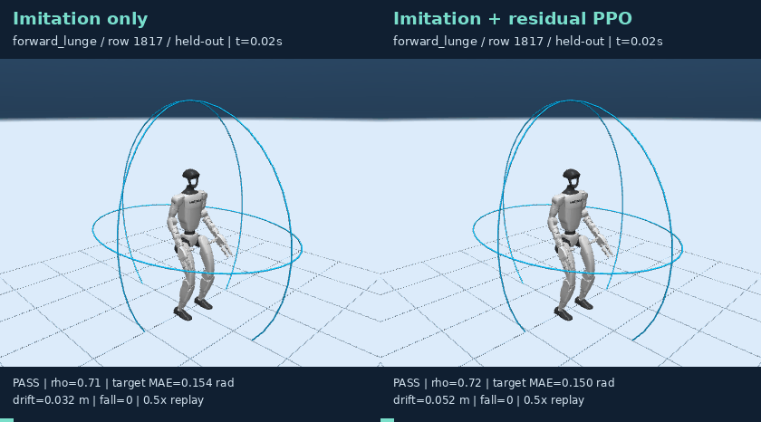
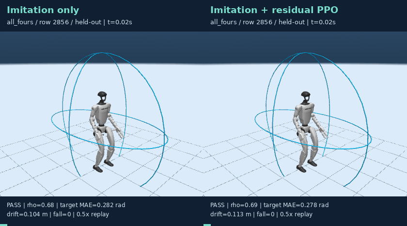
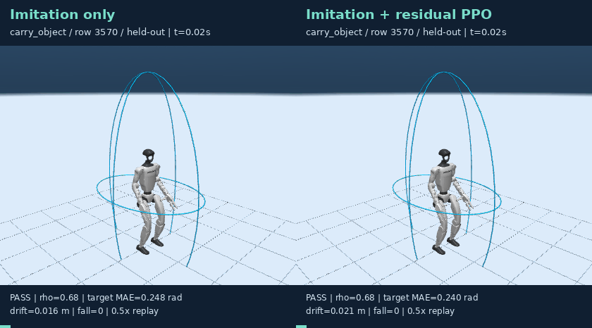

这是对 v3 负结果 的后续探索性算法修订。旧结果保留，不重命名、不用其他方法的输出冒充 RL。SONIC 仍然冻结。
使用状态：研究用候选，未替换默认策略。 短时目标误差改善不能抵消安全指标退化；特别要查看下方长保持诊断，不能仅挑选短时图表宣称全面提升。
r = -5 * executed_target_MAE -10 * max(radius - 0.95, 0)^2
-0.25 * (min(drift, 1)/0.35)^2 -4 * fall -1 * nonfoot_contact
本轮同时修改残差结构、奖励与更新方式，不能将变化单独归因于某一项。旧测试集已被查看过；本轮虽未用其选模，仍应作为开发集上的探索性复测，论文定稿需要新增未看过的 actor/场景确认集。
完整协议、训练曲线数值与权重 SHA256。更新前为零残差，等价于原始模仿策略；零迭代权重允许被保留，绝不保证训练一定提升。
| Seed | 验证集选择的 RL 迭代 | 训练 episode |
|---|---|---|
| 20260928 | 60 | 1920 |
| 20260929 | 60 | 1920 |
| 20260930 | 60 | 1920 |
每方法、每种子 727 个窗口。预热 0.2 秒，过渡 0.2 秒，保持 0.4 秒。成功定义仍为形状/触地/跌倒/漂移门控通过且目标关节平均误差 ≤0.30 rad。

| 方法 | 执行目标 MAE ↓ | 短时姿态成功率 ↑ | 门控通过率 ↑ | 跌倒率 ↓ |
|---|---|---|---|---|
| Imitation only | 0.2184 ± 0.0003 | 84.27 ± 0.21% | 96.70 ± 0.14% | 0.00 ± 0.00% |
| Imitation + residual PPO | 0.2139 ± 0.0009 | 84.69 ± 0.88% | 96.38 ± 0.29% | 0.00 ± 0.00% |
种子均值上的 actor 成簇配对 bootstrap（RL−IL，95% CI）：
pose_success：差值 +0.00413，CI [-0.01058, +0.01722]；23 个测试 actor。accepted：差值 -0.00321，CI [-0.01029, +0.00659]；23 个测试 actor。target_mae：差值 -0.00451，CI [-0.00729, -0.00217]；23 个测试 actor。
所有来源族都保留在图中，含退化项；MAE 减小与安全通过率提升不是同一结论。各种子、各来源族指标见 summary.json。
固定展示 seed 20260928，六个预先指定来源族各取最早测试窗口；不按成功筛选。左侧 IL，右侧 IL＋残差 RL。同一输入流形、同一初态，均为新 SONIC/MuJoCo 执行。字幕为全 episode 指标，0.5 倍速。
流形椭球仍为骨盆中心、航向对齐的形状检查，不是固定世界障碍物。来源名称不是完整动作成功证明，PASS 也不代表完成爬行/绕障任务。
| 来源 / 样本 | 同步对比 |
|---|---|
| walk_lateral / 628 |  |
| turn_in_place / 1031 |  |
| crouch_walk / 1278 |  |
| forward_lunge / 1817 |  |
| all_fours / 2856 |  |
| carry_object / 3570 |  |
固定全部 19 个测试来源族各一窗 × 3 个种子；0.4 秒预热、0.4 秒过渡、3 秒保持。只是诊断子集，不替代完整长时任务测试。
| 方法 | 样本 | 门控通过 | 姿态成功 | 跌倒 |
|---|---|---|---|---|
| Imitation only | 57 | 100.0% | 87.7% | 0.0% |
| Imitation + residual PPO | 57 | 93.0% | 82.5% | 0.0% |
使用现有 WSL、SONIC、SEED 派生 NPZ 及 actor 元数据；先完成 v3 的模仿训练。不要将更新后的权重覆盖到旧实验目录。
seed=20260928
base=reports/manifold_motion/stage1_ab_response_v3/replicate_${seed}/seed_${seed}/imitation.pt
out=reports/manifold_motion/stage1_residual_rl_v4/seed_${seed}
OMP_NUM_THREADS=2 OPENBLAS_NUM_THREADS=2 ./scripts/python.sh -m manifold_motion.stage1.residual_rl train --seed "$seed" --base "$base" --out "$out"
# 训练/验证确定方案后，才执行测试：
OMP_NUM_THREADS=2 OPENBLAS_NUM_THREADS=2 ./scripts/python.sh -m manifold_motion.stage1.residual_rl evaluate --base "$base" --out "$out"
# 对另外两个种子重复，再生成报告：
MUJOCO_GL=egl ./scripts/python.sh -m manifold_motion.stage1.residual_report --long-check